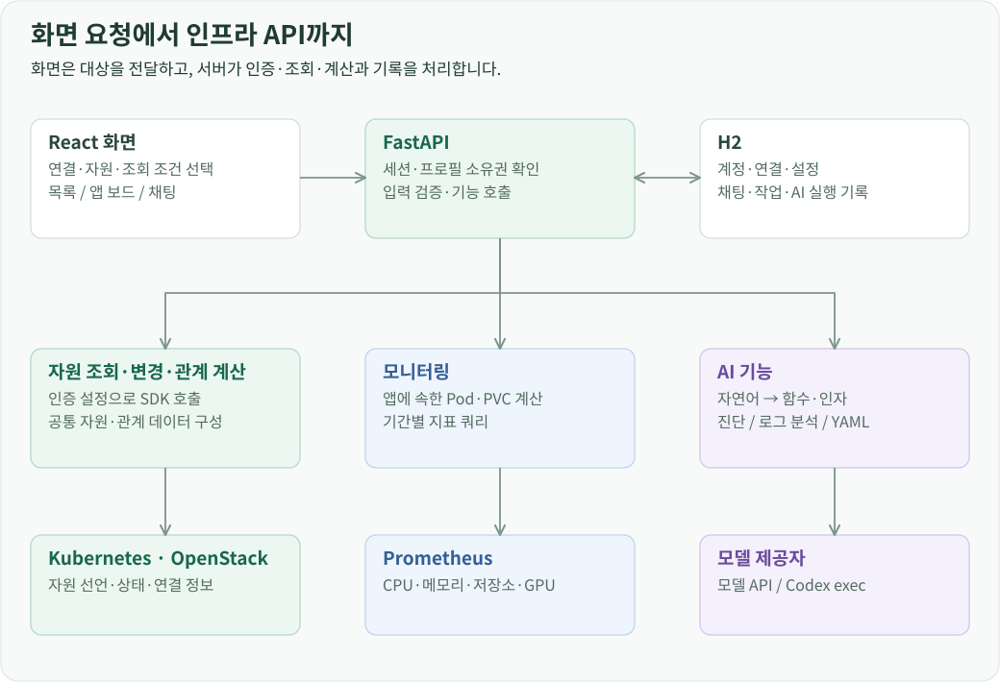
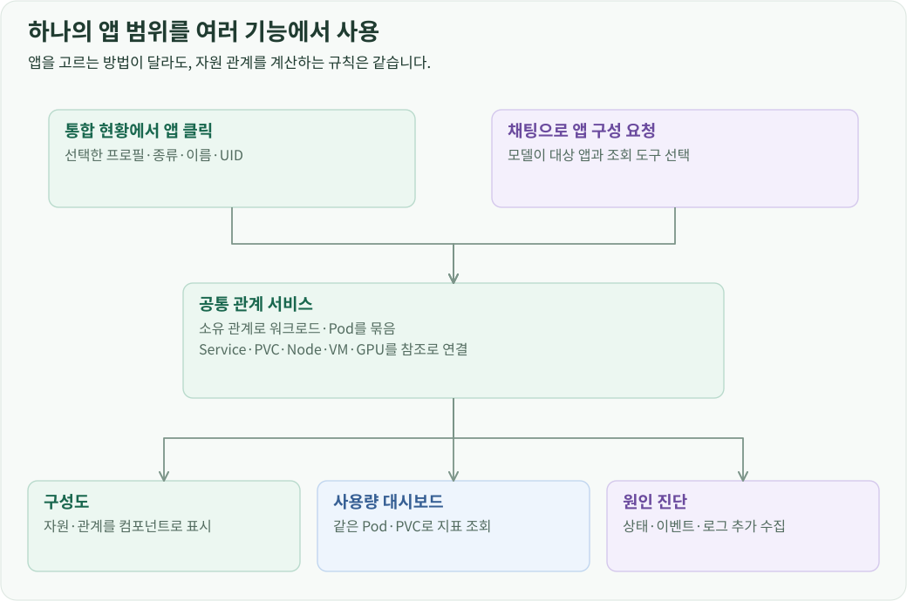
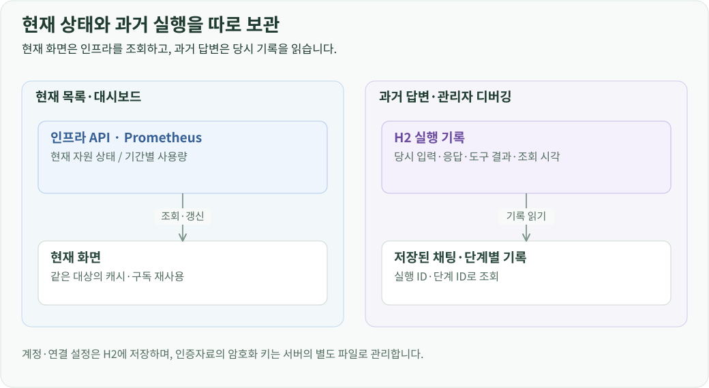

프로젝트 소개 · CloudLens 개발 · 전체 문서
개요
CloudLens의 React 화면은 사용자가 고른 클러스터와 자원을 FastAPI 서버에 전달합니다. 서버는 해당 사용자의 연결 설정으로 Kubernetes와 OpenStack API를 호출하고, 자원 목록이나 앱 구성처럼 화면에서 사용할 결과를 만듭니다. 앱의 사용량은 Prometheus에서 읽고, 자연어 요청과 장애 자료의 해석은 설정된 AI 모델에 맡깁니다.
화면에서 인프라 API까지

화면이 보내는 값은 연결 프로필 ID, 자원 식별자와 조회 조건입니다. 서버는 로그인 세션으로 요청자를 확인하고, 그 사용자가 소유한 프로필에서 접속 주소와 인증정보를 읽습니다. 따라서 브라우저가 인프라 인증정보를 가지고 직접 API에 접속할 필요가 없습니다.
외부 API 통신은 플랫폼별 어댑터가 처리합니다. Kubernetes 어댑터는 API 버전과 Namespace를, OpenStack 어댑터는 서비스 종류와 프로젝트 범위를 처리합니다. 각 어댑터가 응답을 공통 목록 형식으로 바꾸면 탐색기와 채팅 카드는 같은 방식으로 자원 이름, 상태와 상세 이동 대상을 표시할 수 있습니다.
목록 조회 한 번의 처리 순서
Pods 목록을 열면 화면은 프로필 ID, 자원 종류, API 버전, Namespace와 페이지 조건을 전달합니다. 백엔드는 해당 사용자의 Kubernetes 연결 설정을 읽고 SDK로 목록을 조회합니다. 결과를 열 정의, 자원 행, 다음 페이지 정보와 조회 시각으로 변환해 반환합니다.
OpenStack도 같은 목록 응답 형식을 사용합니다. 어댑터는 서비스별 SDK 호출에 프로젝트 범위와 조회 조건을 적용하고, 인스턴스의 주소·Flavor·상태처럼 자원마다 필요한 열을 구성합니다.
앱을 클릭할 때와 채팅으로 물을 때
통합 현황에서 앱을 클릭하면 화면이 이미 알고 있는 자원 식별자로 구성을 요청합니다. 채팅에서는 모델이 사용자 문장에서 대상 앱과 조회 도구를 선택합니다. 입력을 얻는 과정은 다르지만, 대상이 정해진 뒤에는 같은 관계 서비스를 호출합니다.

관계 서비스는 소유 관계를 따라 앱의 워크로드와 Pod를 모으고, Service·저장소·Node·VM을 연결합니다. 이 계산을 화면과 채팅에 각각 구현하면 앱을 묶는 기준이나 준비 상태가 서로 달라질 수 있습니다. 공통 서비스가 계산한 자원과 관계를 두 화면에 전달하고, 프론트엔드는 그 결과를 그래프로 배치하도록 했습니다.
사용량 조회와 장애 진단에도 같은 앱 범위를 사용합니다. 모니터링은 여기에 속한 Pod와 PVC로 Prometheus 조회 조건을 만들고, 진단은 관련 자원의 상태·이벤트·로그를 추가로 수집합니다. 사용자가 앱을 한 번 선택하면 구성, 부하, 장애 조사가 같은 대상을 기준으로 동작합니다.
통신 방식별 역할
| 작업 | 통신 방식 | 전달하는 내용 |
|---|---|---|
| 목록·상세·설정·관리 요청 | HTTP JSON API | 조회 조건, 자원 데이터, 작업 접수 결과 |
| 자원 목록 갱신 | SSE | 초기 snapshot, 변경 patch, 연결 상태 |
| AI 채팅 | SSE | 실행 단계, 조회 근거, 최종 결과 카드 |
| Pod 로그 | NDJSON 스트림 | 시작·로그 데이터·종료·오류 이벤트 |
| Pod 터미널·VM SSH | WebSocket | 키보드 입력, 원격 출력, 터미널 크기 |
Kubernetes 목록은 list·watch로 변경을 받고, OpenStack 목록은 주기적으로 조회한 차이를 계산합니다. 두 방식의 결과를 서버에서 SSE 이벤트로 통일합니다. 브라우저는 플랫폼별 갱신 방식을 구현하는 대신 snapshot과 patch로 목록 상태를 갱신합니다.
현재 상태와 실행 기록을 보관하는 방식
자원의 현재 상태는 Kubernetes와 OpenStack에서, 시간에 따른 사용량은 Prometheus에서 읽습니다. H2에는 포털 계정과 연결 설정, 채팅, 작업 결과와 AI 실행 기록을 저장합니다. 사용자가 과거 답변을 열면 그때 조회한 결과를 보여주고, 현재 목록을 열면 인프라에서 갱신된 상태를 가져오는 구조입니다.

연결 프로필의 인증자료는 암호화해 H2에 넣고, 복호화 키는 서버의 별도 파일로 관리합니다. API를 호출할 때만 서버가 필요한 연결 설정을 복원합니다. AI 실행 기록에는 모델 입력부터 도구 실행 결과까지 같은 실행 ID를 붙여, 최종 답변을 만든 과정을 다시 따라갈 수 있게 했습니다.
반복 조회는 서버 메모리의 캐시와 구독을 재사용합니다. 사용자·연결·자원·조회 조건으로 대상을 구분하고, 같은 목록을 보는 브라우저에는 하나의 수집 작업에서 얻은 변경분을 전달합니다. 프론트엔드의 TanStack Query는 화면별 요청 상태와 조회 결과를 관리합니다.
기능 모듈과 기술 구성
기능 모듈은 같은 FastAPI 프로세스와 H2를 공유하는 모듈형 모놀리스로 구성했습니다. 인증·연결 조회·자원 처리·실행 기록을 프로세스 내부 호출로 이어가면서, 기능별 처리 규칙과 외부 연동의 경계를 유지합니다.
개발·검증 환경의 배포에서는 이 포털 프로세스를 Mac에서 실행하고, 관리 대상과 모델·모니터링 서버는 OpenStack VM 위의 Kubernetes에 배치했습니다. 포털 화면을 제공하는 서버와 화면에서 관리하는 인프라를 분리한 구성입니다.
물리 서버에 VM과 클러스터를 만들고 모델 API를 제공하는 과정은 OpenStack·Kubernetes 모델 서빙 환경 구축에서 확인할 수 있습니다. 포털이 사용하는 API와 저장소, GPU의 설치·설정 과정도 확인할 수 있습니다.
| 계층 | 기술 | 역할 |
|---|---|---|
| 웹 화면 | React 19, TypeScript, Vite | 탐색기·통합 현황·채팅·관리 화면 |
| 서버 데이터 관리 | TanStack Query | 조회 캐시와 요청 상태 |
| 편집·접속·시각화 | Monaco Editor, xterm.js, Dagre | YAML 편집, 터미널 출력, 그래프 배치 |
| API 서버 | Python, FastAPI, Uvicorn | 기능별 요청 처리와 스트림 중계 |
| 인프라 연동 | Kubernetes Python SDK, openstacksdk, Paramiko | 자원 API와 VM SSH |
| 모델 연동 | HTTPX, Codex exec 어댑터 | 공통 모델 요청·응답 |
| 영속 저장 | H2, JayDeBeApi, JPype | 계정·연결·작업·실행 이력 |
| 환경 관리 | uv, npm | 백엔드·프론트엔드 의존성 |